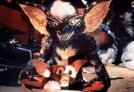

Randall "Rand" Peltzer es un inventor de cuestionable éxito que vive en la ficticia comunidad de Kingston Falls y
viaja
a Chinatown en Nueva York para vender sus inventos y comprar un regalo de Navidad para su hijo Billy.
Finalmente, encuentra en la pequeña tienda del Sr. Wing, un anciano chino, una criatura llamada Mogwai (que en chino
cantonés significa "espíritu maligno").
El dueño de la tienda no quiere venderle el animal aun cuando le ofrece un gran cantidad por él, pero su nieto se lo
vende en secreto a Rand porque necesitan el dinero.
Aunque la criatura tiene un aspecto adorable e inocente, el nieto del dueño advierte a Rand que debe respetar
algunas
precauciones:
Rand llama a la criatura "Gizmo" y se la regala a su hijo. Este descubre que la criatura es muy inteligente y le toma mucho aprecio. Todo parece ir bien hasta que Pete, un amigo de Billy, derrama accidentalmente agua sobre Gizmo, lo que provoca que salgan unas bolas peludas del animal. De estas bolas nacen nuevos Mogwai. A diferencia de Gizmo, los nuevos mogwais resultan ser agresivos, especialmente uno al que llaman Stripe, caracterizado por llevar un mechón de pelo blanco, y que parece ser el líder de las nuevas criaturas.
Stripe estropea el reloj y así engaña a Billy para que le dé de comer después de medianoche. Tras la comida las criaturas se convierten en una forma de crisálidas de las que renacen convertidos en unos monstruos de aspecto reptiliano llamados gremlins, Gizmo es el único que no se convierte gracias a que no quiso comer. Billy y su madre logran acabar con todos excepto con Stripe, que consigue escapar. En su huida llega hasta una alberca cercana y logra lanzarse al agua, creando un ejército de Gremlins que se esparcen por toda la ciudad, atacando a la gente e incluso matándola. Billy y Gizmo rescatan a la novia de Billy, Kate Beringer, de los gremlins que habían ocupado su bar.
Todos los gremlins se reúnen en el cine local, y se quedan fascinados al ver la película Blancanieves y los siete enanitos. Billy, Kate y Gizmo consiguen colarse en las calderas del edificio y prenden fuego al gas inflamable, explotando el cine y matando a todos los gremlins.
Sin embargo, Stripe salió en busca de algo de comida durante la proyección ve la explosión y la muerte de sus amigos. Billy lo ve y Stripe se mete al centro comercial Montgomery Ward donde encuentra una fuente e intenta mojarse nuevamente para generar más gremlins, pero es destruido por Gizmo cuando este abre una ventana para que entre luz solar.
Mientras la ciudad y la familia Peltzer tratan de recuperarse del ataque de los gremlins, el Sr. Wing que ha estado investigando los encuentra y se lleva a Gizmo para que no se repita lo sucedido. Antes de irse, Gizmo se despide de Billy hablándole debido al gran aprecio que le tomó.